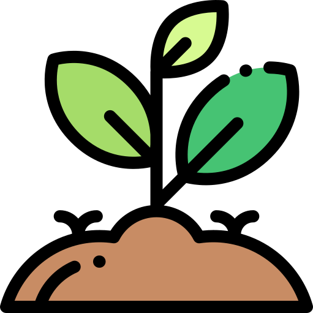
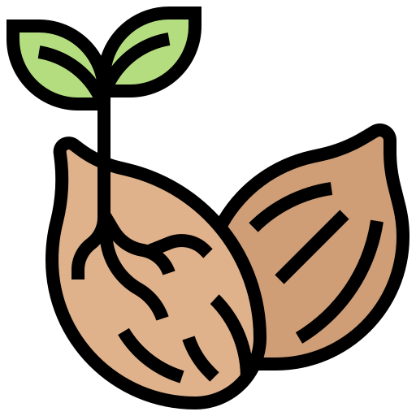

<ion-header>
    <ion-toolbar>
        <ion-title>Nueva Zona</ion-title>
        <ion-buttons slot="start">
            <ion-back-button defaultHref="" (click)="cancelar()"></ion-back-button>
        </ion-buttons>
    </ion-toolbar>
</ion-header>

<ion-content class="background">
    <ion-card class="p-2">
        <form #formulario="ngForm" (ngSubmit)="onSubmit(formulario)">

            <br>

            <div class="text-center">
                
                
            </div>

            <ion-item>
                <ion-label position="floating">Nombre</ion-label>
                <ion-input type="text" required name="name" [(ngModel)]="ground.name"></ion-input>
            </ion-item>

            <br>

            <ion-item>
                <ion-label position="floating">Tipo</ion-label>
                <ion-select ok-text="Ok" cancel-text="Cancelar" [(ngModel)]="ground.type" name="type" placeholder="Seleccione el tipo de zona">
                    <ion-select-option value="module">Módulo</ion-select-option>
                    <ion-select-option value="seedbed">Semillero</ion-select-option>
                </ion-select>
            </ion-item>

            <br>

            <!-- <div *ngIf="ground.type">
                <div *ngIf="ground.type == 'module'">
                    <ion-item>
                        <ion-label position="floating">Numero de Surcos</ion-label>
                        <ion-input type="number" required name="nsurcos" [(ngModel)]="ground.number_furrow"></ion-input>
                    </ion-item>

                    <ion-item>
                        <ion-label position="floating">Numero de Bancales</ion-label>
                        <ion-input type="number" required name="nbancales" [(ngModel)]="ground.number_terrace"></ion-input>
                    </ion-item>
                </div>

                <div *ngIf="ground.type == 'seedbed'">
                    <ion-item>
                        <ion-label position="floating">Numero de Bandejas</ion-label>
                        <ion-input type="number" required name="nbandejas" [(ngModel)]="ground.number_bed"></ion-input>
                    </ion-item>
                </div>
            </div> -->

            <br>

            <ion-row>
                <ion-col size="6">
                    <ion-button [disabled]="formulario.invalid" expand="block" shape="round" type="submit" color="success" size="large">
                        <ion-icon name="checkmark-outline"></ion-icon>
                    </ion-button>
                </ion-col>
                <ion-col size="6">
                    <ion-button (click)="cancelar()" color="danger" expand="block" shape="round" size="large">
                        <ion-icon name="close-outline"></ion-icon>
                    </ion-button>
                </ion-col>
            </ion-row>


        </form>
    </ion-card>
</ion-content>